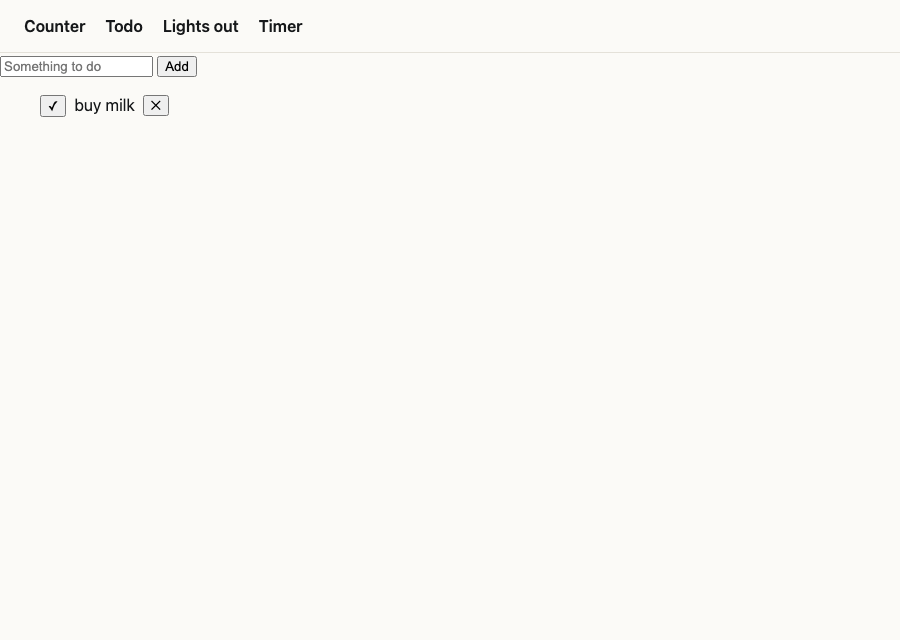
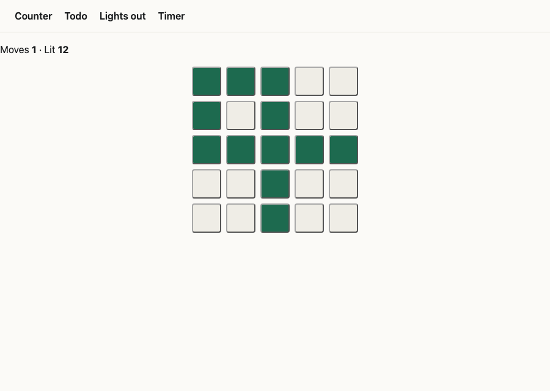
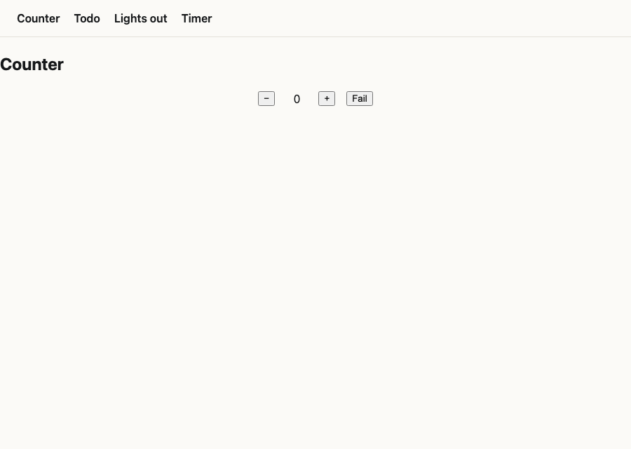
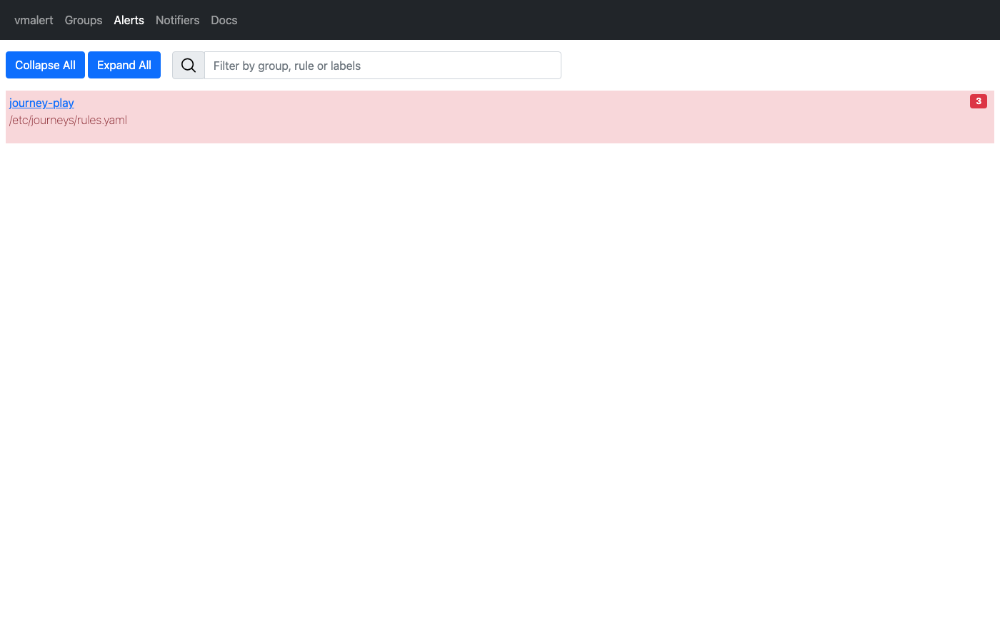
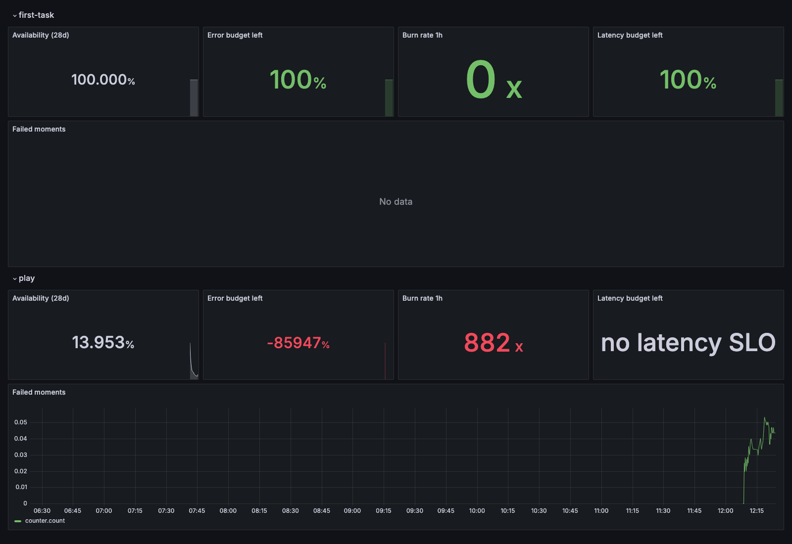

hello-journeys
Pronto's idioms app with journey monitoring added from pronto-plugins, on the released pronto 0.14.0 and omnishell 0.12.1.
2026-10-18 · journeys added, one run measured
The app is pronto's idioms fixture under its own name and module. bin/pronto-journeys . wrote the host's files. Two journeys went into journeys_spec.cue, both hatches into ir.html, and nothing else changed.
Gates (exit codes seen)
| Verb | Result | Includes |
|---|---|---|
generate | 0 | gestures derived from the screens; the door's /telemetry route; observability/ |
lint | 0 | promtool check rules on the SLO rules |
test | 0 | the program refusing an undeclared gesture; promtool rule tests on synthetic burns |
integrate | 0 | vector test on the collector's run assembly; visual lint |
Using it
The app was launched with sayt launch and sayt launch@journeys. Headless Chrome, at the door's own address, added a todo, pressed + + − on the counter and pressed one light. The reporter hatch posted each gesture through the door to the collector.

todo.create-todo: the form's write succeeded, and the first-task run closed good.
grid.press after three counter.count: the play run closed good.What the collector exported afterwards (as read):
journey_runs_total{journey="first-task",outcome="good"} 1
journey_runs_total{journey="play",outcome="good"} 1
journey_moments_total{journey="play",moment="counter.count",outcome="ok"} 3
journey_moments_total{journey="play",moment="grid.press",outcome="ok"} 1
journey_moments_total{journey="first-task",moment="todo.create-todo",outcome="ok"} 1
journey_moment_seconds_count{journey="first-task",moment="todo.create-todo"} 1
The app keeps its rows in the tab and device, so none of its writes can fail. The failure switch below gives it a failure that does.
2026-10-18 · watching it: a local dashboard and the failure switch
sayt launch@journeys now starts VictoriaMetrics, vmalert and Grafana beside the collector, fed the generated rules and dashboard, and prints the app, Grafana and alert addresses. The counter gained a Fail button: the same count handler, made to throw.

network-error; this app's stylesheet does not draw that state, but the reporter reads it, and counter.count is a failed moment.
play.
first-task is untouched. play is far past its budget, because the many probe failures sent while finding the bugs below count against it. A fresh launch@journeys starts clean.Found by watching it, fixed
- The terminal moves between screens without unloading the page, so a batch waiting for 20 events or a
pagehidecould sit in the tab indefinitely. The reporter now also flushes 2 s after a batch's first event. - Chrome dropped the batch sent at
pagehidewhen the page reloaded its own address. Three Fail presses with reloads counted 1. What a page holds as it goes is now kept in the tab and sent by the next load, and the collector's dedupe drops any repeat: 3 of 3. - Each outcome's counter is born at its first run, and
rate()over a series that has not moved since is 0, so a fresh journey read 0/0: "No data". The rules and the dashboard now take ratios ofincrease(), which VictoriaMetrics counts from a series' first sample. - Pressing Fail again on a screen already in
network-errorcounted as ok: the terminal writes the state again, but the reporter only read changes. It now settles on every write: five presses on one screen, five failures. The local stack no longer holds back the newest 30 s (VictoriaMetrics' latency offset) or backdates evaluations by 30 s (vmalert's eval delay), so a press shows within about 40 s.